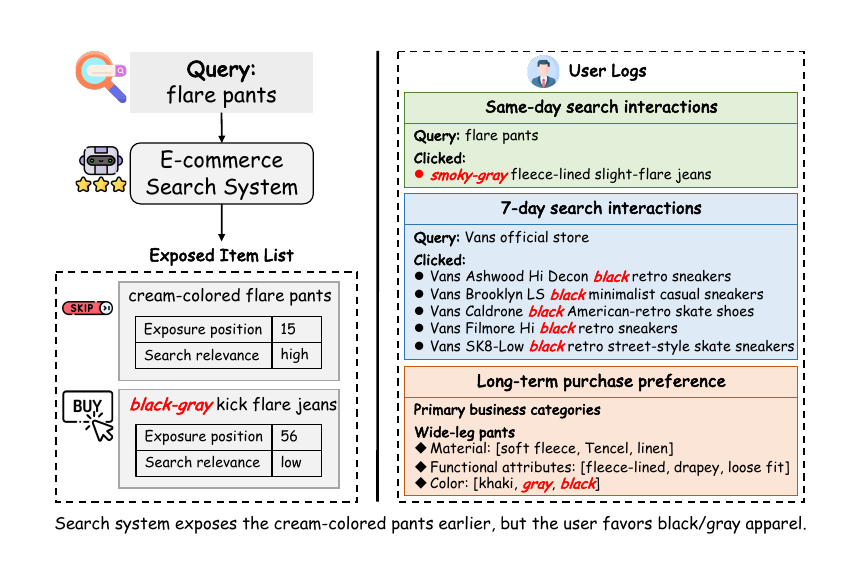
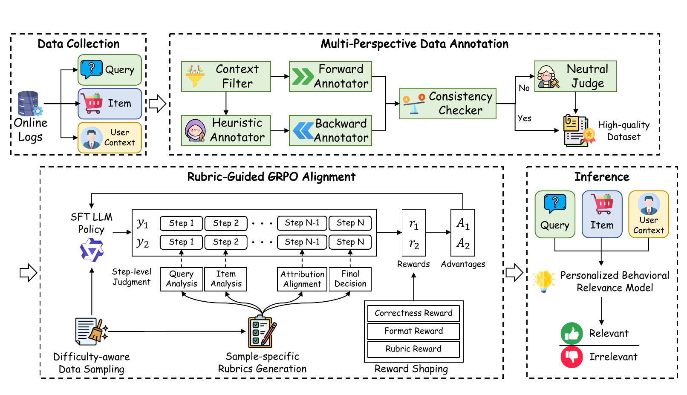
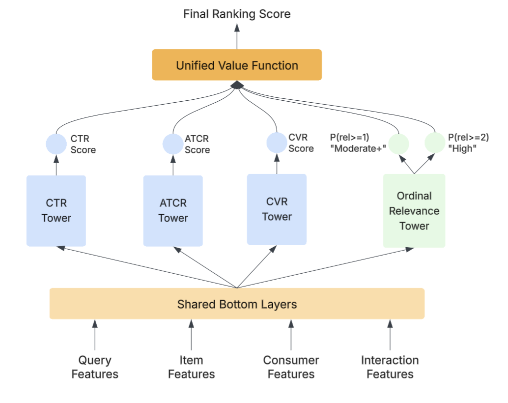

Contents · 7 sections
1The problem becomes a yes-or-no question2The steps behind one decision3Labels come from three-way cross-checking, not raw clicks4Rewarding only the label lets the rationale be empty5Offline F1 rises from 0.783 to 0.8306Online, 5% of traffic for three days: +0.67% transaction-related user-days7A small change in a different placeSHARE
E-commerce search commonly works in two stages: a relevance model first judges how well the query and the item match and assigns candidates to a few relevance tiers, and a downstream personalized ranking model, usually optimized for CTR, ranks only within those tiers. Tiers are mainly decided by query-item matching, and who the user is only enters at the ranking stage. So an item that suits this user but sits in a low tier gets limited ranking opportunity, however well the ranking model knows the user. This paper, deployed on 1688, moves part of personalization into the tiers: an LLM reads the user's behavior logs and decides whether a candidate is supported by behavioral evidence. 1688 main search has four tiers, and online only supported candidates in the second tier are promoted by one level. The highest tier itself is left unchanged, the third and fourth tiers are untouched in this version, and after a promotion the original CTR model still decides the order within each tier. In a three-day online test on 5% of traffic, transaction-related user-days rose by 0.670%. So the paper makes relevance tiers reflect user preference too, rather than pulling low-relevance results to the front: a second-tier candidate supported by behavioral evidence moves up only one level, and the CTR model still decides what comes first.
The difficulty is that tiers are mainly decided by matching the query against the item itself, and who the user is only enters at the ranking stage. Figure 1 of the paper gives a concrete case. A user searches for "flare pants". A cream-colored pair of flare pants is judged high and shown at position 15, while a pair of black-gray kick flare jeans is judged low and shown at position 56. Yet earlier that day, under the same query, this user clicked a pair of smoky-gray fleece-lined slight-flare jeans, and the long-term purchase record lists khaki, gray and black as preferred colors for wide-leg pants. However well the ranking model knows this user, it can only rank inside the structure the tiers have fixed, so the black-gray pair in the low tier gets limited ranking opportunity.

Existing fixes do not sit well in this example. The most direct one is to send lower-tier candidates into CTR ranking too, so the black-gray pair gets a chance, but the candidate set grows and the tiers weaken as a "relevance first" quality constraint. Another line of work fuses things on the ranking side, for example PRECTR (a ranking framework that unifies relevance and CTR) and its follow-up PRECTR-V2. They model relevance tier, click probability and user preference together, representing preference as numeric features, Semantic IDs or embeddings. The authors argue that such compressed representations cannot check, item by item, whether "the user prefers gray and black" matches "these jeans are black-gray" under the current query.
So this paper intervenes at a different point. Its claim is that relevance tiers need not be purely the result of objective query-item matching. When a user's behavior logs show a stable preference, an LLM can judge from that behavioral evidence whether a candidate suits this user, and supported candidates can be promoted one tier before CTR ranking, under a narrow rule: online, only the second tier is promoted, and after that the CTR model still ranks within the tier. The candidate structure the ranking model receives then reflects both query-item matching and user preference.
The problem becomes a yes-or-no question
The authors define this as a new task called PBR (Personalized Behavioral Relevance). The input is one query, one candidate item and three segments of the user's behavior records. The output is 0 or 1: under the current query intent, is this candidate supported by the user's behavioral preference? The paper's inference prompt states that insufficient evidence means output 0.
The three segments are split by recency. The first is same-day search interactions, including clicks, add-to-cart, favorites and purchases. The second is search interactions over the past 7 days. The third is purchase preference over one year: price-zone preference summarized per category, preference summarized as category-property-value records (CPV in the paper), plus a profile of the user's stable business characteristics. In Figure 1, the long-term entry "wide-leg pants: color khaki, gray, black" has exactly this per-category, per-attribute-value form.
How the 0/1 is used online is deliberately narrow. PBR acts only on the top two tiers: candidates in the highest tier already have strong query-item relevance and are not promoted further; a second-tier candidate moves up to the highest tier only when judged 1. Each candidate can move up at most one tier, and this online version leaves the third and fourth tiers untouched, so weakly relevant items cannot jump straight to the highest exposure positions. Promotion is also not the same as being ranked to the front: PBR replaces neither the original relevance model nor the CTR model; after promotion, CTR ranking still decides the order within the tiers.
An illustration with Figure 1: suppose the black-gray pair sat in the second tier and PBR judged it 1. It would then join the cream-colored pair in the top tier, and the CTR model would decide which comes first. If it sat in the third or fourth tier, this online version would leave it alone. Figure 1 uses two labels, high and low, and does not map them onto the four online tiers, so the "low" label in the figure should not be read as "low-relevance items can also be pulled to the front."
The steps behind one decision
BRIDGE is the full framework the authors built for PBR; the name stands for Behavioral Relevance Inference with Dynamic Guidance from Evidence. It pulls context from the logs, builds labels, trains an LLM, and then computes results offline into a cache. The table below lists the input and output of each step.
| Step | Input | What it does | Output | Training only |
|---|---|---|---|---|
| Gather context | User logs and the current query | Score each history record against the query by embedding similarity; keep the closest few per category | Compact context relevant to this query | No |
| Heuristic pool | Exposure list and interaction positions | Give each candidate a weak label from position rules | A roughly balanced pool to annotate | Yes |
| Three-way annotation | Samples in the pool | Forward annotation, reverse verification, a judge when they disagree | Kept samples, labels and forward rationales | Yes |
| SFT | 30K kept samples | Learn to write a seven-step rationale, then the label | Initial model | Yes |
| Rubric-guided GRPO | 18,325 samples of suitable difficulty | Reward correct labels and also rationales that use the right evidence | Final model | Yes |
| Offline inference | User-query-item triples | Write the seven-step rationale and output 0/1 | PBR results in the cache | No |

The behavioral context may contain many records unrelated to the current query, so it is filtered first. The authors treat each interaction record or preference record as a retrieval entry and use Qwen3-Embedding-8B to compute its cosine similarity to the query. They keep 10 entries each for same-day and 7-day search interactions, 5 each for category price-zone and CPV preference records, and keep the business profile whole.
The model does not emit a label directly. It first writes a fixed seven-step rationale: query intent, item attributes, same-day context, 7-day context, long-term context, attribute-level alignment, and finally the decision with \boxed{0} or \boxed{1}. For the black-gray jeans in Figure 1, a rationale might look like this (illustrative):
- Query intent: looking for flare pants.
- Item attributes: denim, kick flare cut, black-gray color.
- Same day: clicked a pair of smoky-gray fleece-lined slight-flare jeans under flare pants.
- 7 days: clicked 5 pairs of black Vans shoes; a different category, so only indirect evidence of a taste for dark colors.
- Long term: preferred colors for wide-leg pants are khaki, gray, black.
- Attribute-level alignment: the color matches both the same-day click and the long-term color preference.
- Decision: \boxed{1}.
Run the same process on the cream-colored pair and the color finds no support in any of the three segments. Whether it ends up 0 or 1 depends on whether its other attributes have behavioral support; insufficient evidence means 0. The authors want the seven-step format so the decision rests on concrete query, item and behavioral evidence rather than an overall impression.
Labels come from three-way cross-checking, not raw clicks
Training needs labels. Using interactions directly as labels does not work: a clicked item is not necessarily supported by preference, and an unclicked item is not necessarily irrelevant, since the user may simply have picked something else.
The authors first build an annotation pool with position rules. In one exposure list they take the earliest and latest positions of interacted items. Illustration: the user clicked positions 8 and 20. The two clicked items are likely positives. Unclicked items before position 8 were probably seen and passed over, so they count as informative negatives. Unclicked items between 8 and 20 count as possible negatives. Items after position 20 are not sampled, because the user may never have scrolled that far. These are only weak hints, not final labels.
Then come three roles. A forward annotator does not see the weak label; it reads the query, item and behavioral context and writes a rationale and a label. A reverse annotator gets the weak label as a hint, checks whether the evidence supports it, and also gives its own label. When the two disagree, a neutral judge reads both rationales and decides whether to accept the forward label. Only samples where forward and reverse agree, or where the judge accepts, are kept. SFT learns from the forward annotator's rationale, because at inference time the model does not see the weak label either.
The outcome: 50.6% of samples had forward and reverse labels agree, 27.7% were accepted by the judge, and 21.7% were discarded. In other words, for about one sample in five the forward and reverse labels disagreed, the judge did not accept the forward label, and the sample was dropped. All roles use the same underlying LLM with different prompts and inputs. The authors also had two PhD students independently annotate 200 randomly sampled test examples. The automatic labels agreed with the human labels on 93.5% of them, with Cohen's κ of 0.8669, which shows the pipeline's labels largely match human judgment.
Rewarding only the label lets the rationale be empty
After SFT, the authors train with GRPO: for each input the current model samples 8 outputs and is updated by how they compare within the group. The trouble is that if the reward looks only at the final label, an output that just says "the user should like these pants" and answers 1 (illustrative) earns the same reward as one that cites the color evidence step by step and answers 1.
Their fix is a separate rubric for each sample (sample-specific rubric in the paper). Once a label is settled, an LLM uses the query, item, behavioral context and label to write 7 check questions, one per reasoning step, each with a weight. The rubric depends only on the input and the label, never on any model-written rationale. During training an LLM judge marks each check pass or fail, and the weighted pass rate is the rationale score. The total reward is:
Here is whether the label is correct (1 or 0), is the rationale score between 0 and 1, and the weights 2 and 1 are the paper's settings. An illustration: 7 checks with weight 1 each, and two outputs that both answer 1 correctly. Output A writes "color preference gray, black" in the long-term step and passes 6 checks, scoring 2+6/7≈2.86. Output B writes only "the user likes pants" and passes 3, scoring 2+3/7≈2.43. A wrong answer that passes 6 checks gets only 6/7≈0.86. This shows the label still dominates, and the rationale score separates outputs that are all correct. Hoot says

- A: 2×1 + 6/7 ≈ 2.86 (illustrative)
- B: 2×1 + 3/7 ≈ 2.43 (illustrative)
- Wrong but passes 6: 0 + 6/7 ≈ 0.86 (illustrative)
Illustrative: the rubric has 7 equally weighted checks and is written before any answer is seen. A and B are both correct, so the only gap is how many checks each passes. A wrong answer that passes 6 checks still gets only 6/7≈0.86.
Source
paper Eq. 3 and implementation settings (label weight 2, rubric weight 1), Appendix C rubric generation and scoring promptsThe GRPO samples are also selected. The SFT model first samples 8 outputs for each sample in the candidate pool, and only samples with both correct and incorrect outputs are kept. The authors' reasoning is that groups that are all correct or all wrong are too easy or too hard, and group-relative advantages give little useful signal. This step keeps 18,325 samples from the pool.
Offline F1 rises from 0.783 to 0.830
The data come from five days of search logs on 1688, a B2B e-commerce platform. After annotation there are 76,329 samples: 30K for SFT, 5,000 for testing (55.6% positive), and 18,325 for GRPO, split by user ID so that no user appears in both training and testing. Test labels come from the same annotation pipeline, so offline scores measure how well a model reproduces this pipeline's judgment. The primary metric is F1.
| Model | Acc | Prec | Rec | F1 |
|---|---|---|---|---|
| Qwen2.5-7B zero-shot | 0.609 | 0.620 | 0.769 | 0.686 |
| Qwen2.5-72B zero-shot | 0.641 | 0.643 | 0.796 | 0.711 |
| Qwen2.5-7B + SFT | 0.748 | 0.752 | 0.817 | 0.783 |
| Qwen2.5-7B without rubric reward | 0.780 | 0.774 | 0.852 | 0.811 |
| BRIDGE (Qwen2.5-7B) | 0.798 | 0.780 | 0.888 | 0.830 |
| Qwen3-8B zero-shot | 0.628 | 0.633 | 0.785 | 0.701 |
| Qwen3-32B zero-shot | 0.708 | 0.699 | 0.835 | 0.761 |
| Qwen3-8B + SFT | 0.781 | 0.768 | 0.868 | 0.815 |
| Qwen3-8B without rubric reward | 0.792 | 0.779 | 0.873 | 0.823 |
| BRIDGE (Qwen3-8B) | 0.806 | 0.791 | 0.885 | 0.835 |
| Qwen3-Reranker-8B zero-shot | 0.495 | 0.556 | 0.447 | 0.496 |
| Qwen3-Reranker-8B + SFT | 0.731 | 0.753 | 0.767 | 0.760 |
Numbers are from Tables 2 and 3 of the paper. "Without rubric reward" is the GRPO version that keeps the format check and, for validly formatted outputs, computes only the label reward.
Zero-shot LLMs have high recall and low precision: Qwen2.5-7B reaches 0.769 recall but only 0.620 precision, which the authors read as prompting alone labeling too many candidates as supported. A larger model helps, with Qwen3-32B reaching 0.761 F1, but it still trails the trained 8B models. This shows that in these experiments the task's decision standard has to be taught through annotated data; switching to a bigger model does not make up for it.
SFT brings the largest jump, taking Qwen2.5-7B from 0.686 to 0.783. On top of SFT, full GRPO lifts F1 to 0.830 (Qwen2.5-7B) and 0.835 (Qwen3-8B). GRPO with only the label reward gets part of the way, to 0.811 and 0.823. This shows the rubric reward contributes beyond the label reward, though by under 0.02 on both backbones. The reranker scores only 0.496 zero-shot; the authors attribute this to the task being very different from conventional query-document retrieval, and even after SFT its 0.760 stays below the generative SFT models.
The authors also use the same rubrics to check reasoning quality step by step (Table 4 of the paper). The first two steps, analyzing the query and the item, pass at 0.93 or above for every model. The hardest is the long-term context step: 0.625 for the SFT model and 0.785 for BRIDGE. The final step, whether the decision is grounded, rises from 0.726 to 0.787. The scorer here is the same rubric judge that gives rewards in training, so these numbers show the model better meets the training-time checks; they are not an independent human evaluation.
Online, 5% of traffic for three days: +0.67% transaction-related user-days
The online test ran on 1688 main search, with the treatment group taking 5% of traffic for three days and the control group being the current system. The treatment group raised active user-days by 0.187% (p<0.02) and transaction-related user-days by 0.670% (p<0.01). The first counts user-days with active search behavior; the second counts user-days with transaction-related conversion behavior. This shows that promoting only the second-tier candidates supported by behavioral evidence by one tier produced a statistically significant gain in transaction-related user-days, with a small gain in active user-days as well.
Writing a seven-step rationale with an LLM is not cheap, so BRIDGE does not generate online in real time. It processes user-query-item triples offline: four H20 GPUs handle about 1.02 million samples a day, covering 20.9K queries from 10.8K users with an average of 48.6 candidates per query, at an average of 4.12 seconds of offline inference per query. Online search only reads PBR results from the cache, and a cache miss falls back to the original relevance pipeline, so the added latency is negligible.
The scope is also kept tight. The module is turned on only for high-value B2B buyers with sufficiently rich behavior histories; newly registered users and users with sparse interactions get the original relevance module, so cold-start users are not affected by unreliable preference inference.
These numbers should be read with their limits beside them. The online test ran for only three days, the offline data cover only five days, and validation is only on 1688 and on users with rich behavior. Labels, rationales and rubrics all come from LLMs, and the authors themselves note they may inherit biases from the underlying model and prompt design.
A small change in a different place
The promotion rule is narrow: only the top two tiers, at most one tier, only users with rich behavior. What this paper changes is where personalization enters. In Figure 1 the black-gray pair is held back because the tier mainly reflects how well the jeans match "flare pants"; BRIDGE adds a second question to the tier, whether this user's behavior supports this item, and requires the model to write out which records support it. CTR ranking is unchanged; what changes is the candidate structure it receives.
How did this read for you?
Hoot made a note. Thanks for the feedback.
One tap, no sign-in; tap again to undo. Only anonymous counts are kept, never who you are.
Related papersMore from Paper Daily
 Retrieval · 2026-10-25Rubric-Calibrated Preferences: Cross-Query Calibration of LLM Judgments via Item Response TheoryAcross the rerankers the authors evaluated, nDCG cannot tell them apart on 45.6% of NanoBEIR queries. The root cause is that human relevance labels are sparse, noisy and limited to a few discrete grades. RCP first has an LLM score 10 documents at a time and puts each document into several batches. The more one document outscores another in a batch, the likelier it is more relevant, and a Bradley-…
Retrieval · 2026-10-25Rubric-Calibrated Preferences: Cross-Query Calibration of LLM Judgments via Item Response TheoryAcross the rerankers the authors evaluated, nDCG cannot tell them apart on 45.6% of NanoBEIR queries. The root cause is that human relevance labels are sparse, noisy and limited to a few discrete grades. RCP first has an LLM score 10 documents at a time and puts each document into several batches. The more one document outscores another in a batch, the likelier it is more relevant, and a Bradley-…
Retrieval · 2026-07-28Joint Optimization of Relevance and Engagement in Multi-Task Ranking for E-Commerce with Efficient LLM SupervisionDeep dive: Joint Optimization of Relevance and Engagement in Multi-Task Ranking for E-Commerce with Efficient LLM Supervision. Retrieval · 2026-08-05From Relevance to Authority: Authority-aware Generative Retrieval in Web Search EnginesDeep dive: From Relevance to Authority: Authority-aware Generative Retrieval in Web Search Engines.
Retrieval · 2026-08-05From Relevance to Authority: Authority-aware Generative Retrieval in Web Search EnginesDeep dive: From Relevance to Authority: Authority-aware Generative Retrieval in Web Search Engines. Retrieval · 2026-08-05SPEAR: Selection-aware Personalized End-to-end Adaptive Rewriting and Retrieval for Community SearchDeep dive: SPEAR: Selection-aware Personalized End-to-end Adaptive Rewriting and Retrieval for Community Search.
Retrieval · 2026-08-05SPEAR: Selection-aware Personalized End-to-end Adaptive Rewriting and Retrieval for Community SearchDeep dive: SPEAR: Selection-aware Personalized End-to-end Adaptive Rewriting and Retrieval for Community Search.
Discussion
Add experiment details, reproduction notes or a different take. Requires a GitHub sign-in.
Loading the discussion…